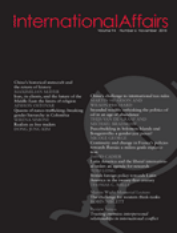

收录于合集
作品简介
【作者】 Tom Long , 英国华威大学助理教授，研究兴趣是美国与拉美国家关系、新兴国家研究。
【编译】 蔡宇（国政学人编译员，中国人民大学硕士生）
【校对】 李源
【审核】 曹鹏鹏
【排版】 贺奕
【来源】 Tom Long (2018). Latin America and the liberal international order: an agenda for research. International Affairs , 94(6),1371–1390.
期刊介绍

International Affairs是由伦敦皇家事务研究所(Royal Institute of International Affairs)创立的学术期刊，该期刊不仅收录许多国际关系领域领先学者的文章，也收录了学界后起之秀的文章，2018年影响因子达3.748。
拉丁美洲与自由国际秩序： 一个研究议程
Latin America and the liberal international order: an agenda for research
Tom Long
内容提要
近年来对自由国际秩序衰退的讨论，使这一概念的支持者和批判者们重新回顾自由国际秩序的根源与影响。然而当人们讨论自由国际秩序时，拉丁美洲的地位常常被忽视，本文试图探索这一实证研究缺失的理论原因。回顾拉丁美洲与自由国际秩序关系的文献，本文认为拉丁美洲并不仅是自由国际秩序的“受害者”，自由国际秩序与拉丁美洲相互影响。 一方面，与自由国际秩序扩张时期的其他殖民地不同，众多拉丁美洲国家在体系扩张初期已经取得主权独立，其独立地位随着国际秩序而不断演进；另一方面，拉丁美洲也影响了大国在自由国际秩序中的合作与竞争，参与了自由国际秩序的演进。 拉丁美洲不公平的国际地位，是被自由国际秩序“部分吸纳”和“边缘化”的结果。关于拉丁美洲与国际秩序关系的研究，揭示了核心区之外的国家在秩序演进的过程中是如何被塑造的。
文章导读
一、导言
在诸多自由国际秩序的批判中，拉丁美洲与自由国际秩序（或美国世界秩序）间关系的讨论还未被重视。自由国际秩序的批评者认为，拉丁美洲近两个世纪以来 “独立但不平等”的历史，揭示了这一秩序的帝国主义和殖民主义根源。自由国际主义的支持者们也将拉丁美洲作为要求自由国际秩序改革的依据。
然而作者认为，自由国际秩序的支持者往往将拉丁美洲视为美国的势力范围，缺乏对拉美国家自身利益诉求的细致研究。 自由国际秩序的批评者将拉美国家作为反殖民地斗争的一个部分，但由于大部分拉美国家在19世纪20年代已经独立，与其他殖民地国家不同，拉丁美洲国家的独立地位随着自由国际主义的建立而不断演进。因此，支持者与批判者都未能全面认识拉丁美洲与自由国际秩序关系的全貌。
二、拉丁美洲与自由国际秩序：支持与批判
关于拉丁美洲与自由国际秩序的互动关系的研究，主要包含在美国与拉丁美洲关系的研究当中。梳理英美学者关于自由国际主义的辩论，作者指出无论是自由国际秩序的支持者还是反对者都忽视了拉丁美洲的地位。
（一） 自由国际秩序的支持者与拉丁美洲
伊肯伯里曾提出 1945年后美国领导的自由国际秩序的五大特征：捆绑式安全、渗透性的互惠式霸权、半主权与不完全的大国（指德国与日本的特殊地位）、经济开放性与公民身份。尽管这些要素与拉丁美洲的发展有关，然而，这一地区仍然“隐藏在霸权的阴影之下”。索伦森(Sorensen)对自由国际秩序的论述同样忽视了中小国家在秩序中的影响。拉丁美洲没有霸权国的现实与对美国霸权的过度强调，是学界忽视拉美地区在自由国际秩序中作用的原因。
作者认为，拉丁美洲研究可以为自由国际秩序研究领域的拓展提供了实证案例。许多关于自由国际秩序的研究往往强调社会化机制，市场力量的使用、强迫和收益，忽视强国与弱国的谈判过程。戴维·莱克将弱国视为支持强国建立的“合法性权威”的从属者，其支持对秩序的形成至关重要。这种谈判过程使人们思考：自由国际秩序中强国与弱国的谈判，究竟为弱国创造了普遍利益，还是有利于精英而不利于大众？尽管伊肯伯里等人坚信自由主义国际秩序将带来经济增长和社会稳定，他们也承认这一建立在美国主导地位的秩序将带来国际的不平等。
（二） 自由国际秩序的批评者与拉丁美洲
许多学者对自由国际秩序的批评植根于后殖民理论，认为自由国际秩序的行动逻辑是强制和胁迫，而不是谈判和合理限制，因此既有文献对较早摆脱殖民统治的拉丁美洲缺乏关注。 但作者认为，尽管拉丁美洲与后殖民理论关联较少，但它与拉美盛行的依附理论联系较深。这也揭示出基于文化的后殖民国际关系理论，与基于经济的依附理论间缺乏沟通。
（三）自由国际秩序与拉丁美洲地区秩序
在自由国际秩序的研究中，拉丁美洲一直是区域主义的典型代表。 经济自由化的支持者认为区域主义将减少国际贸易的收益；在国关学界，卡赞斯坦认为区域不能从美国领导的国际结构中完全独立；阿查亚将区域主义的兴起视为美国实力相对衰退的结果。美国领导的自由主义国际秩序很可能不断收缩，从而被由地方行为体塑造的相互联系的区域秩序所取代。
历史上，拉丁美洲对区域秩序的概念具有一种 “传统的多元主义”观念。1990年后，拉丁美洲成为区域经济一体化与政治民主化的积极推动者。南北美洲针对政治体制、人权、组织犯罪开展一系列合作。区域内左右分裂的紧张态势的消除，似乎宣告着拉丁美洲的区域秩序将与自由国际秩序深度整合。
**然而 2000年后，拉丁美洲区域秩序与美国领导的自由国际秩序关系的模糊性日渐显著。**早在2000年初，南美国家曾试图靠拢崛起的中国，削弱美国在该地区的影响力。但同时，中美洲国家、墨西哥、加勒比地区通过价值链和移民网络与美国的融合程度日益加深。作者质疑，一个紧缩开支的美国会重建在拉丁美洲的影响力吗？拉丁美洲会寻求区域自主性吗？这是否与伊肯伯里提出的主导国与次等强国的关系相吻合？
三、拉丁美洲与自由国际秩序：历史回顾
作者认为，拉丁美洲和自由国际秩序是同时进步的。然而当支持自由国际秩序的拉丁美洲上层精英掌权时，他们也并不完全愿意融入以欧洲为中心的全球秩序。与之相反，拉丁美洲往往将自己置身于自由国际秩序的边缘地带。无论支持者与反对者都赞成，国际与国内的权力斗争的不平衡对拉丁美洲区域秩序的创建和运行起重要影响。
（一）国家独立和英国领导的自由国际秩序
拉丁美洲与英国推动的自由贸易、金本位和航行自由的国际秩序有什么联系？学界对这一领域关注较少。 **作者认为，许多拉丁美洲国家在 19世纪20年代中期已经取得独立，拉丁美洲并不是英国体系扩张中殖民地的典型代表。**然而，英国对拉丁美洲的投资和贸易显著增长，影响了拉丁美洲的精英和国家转型。在二十世纪结束之时，西半球已经成为英国、美国在商业、投资和战略竞争中的重要地区。
**新兴的拉丁美洲国家并没有成为英国领导的国际秩序中的 “规则制定者”。恰恰相反，精英们利用这一国际秩序作为防止西班牙卷土重来的保障，因为自由秩序、共和主义本身与（西班牙）限制贸易的做法不相吻合。**尽管关税收益、民族主义经济政策仍有不少拥趸，自由经济的理念、自由主义哲学确实深刻影响了拉美一段时期内出口导向的商业政策。
值得注意的是，尽管“自由国家”的概念开始不断传播，拉丁美洲的不同社会接受政治自由化的程度各不相同。各国国内的自由主义者与以主张严格的社会等级秩序和教廷的中心地位的保守主义者存在一系列冲突。在巴西，自由主义最初与君主政体与蓄奴制、而后与军事独裁和集权发展制度“并行不悖”。时任墨西哥领导人贝尼托·华雷斯试图借用与美国的紧密联系，抵制国内试图重建欧洲式君主政体的保守主义者。尽管拉丁美洲的外交官试图融入这一秩序，但无论在南北美洲关系、1907年海牙和平会议还是国联中，拉丁美洲国家都往往居于边缘地位。
因此作者认为，拉丁美洲不应当被视为英美大国干预的牺牲者，而是随着国际社会的演化不断主张独立的新兴国家。拉丁美洲是研究相对弱小的主权国家如何融入国际秩序的典型案例。
（二）美国领导的自由国际秩序的建立
许多学者强调伍德罗·威尔逊与富兰克林·罗斯福在塑造自由国际秩序中的作用。批评者们指责美国领导的秩序存在帝国主义、殖民主义、种族、阶级和性格的影子。作者认为，无论是支持者和批评者都倾向于忽视拉丁美洲在两位总统制定美国外交政策，建立国际秩序中的作用。
**伍德罗 ·威尔逊曾将一战后的世界体系视为其“拉丁美洲政策的扩展”。**威尔逊以“十四点计划”及其对国际组织的追求著称，被视为自由国际秩序和殖民地秩序的核心人物。同时，他被批评是1918年后种族家长主义的代表。伊肯伯里指出：威尔逊时代的自由国际主义是“西方白人世界”的产物。关于威尔逊自由国际主义，有评论认为一战后的集体安全观念是威尔逊拉丁美洲政策的延伸。威尔逊的全球制度设计被称为“家长制的进步主义”，他将有限的民族自决和民主政府推广全球。而早在一战以前，美国政策制定者的种族背景和偏见，就已经深刻影响了美国与拉丁美洲的关系。
第一次世界大战使拉丁美洲空前地融入全球秩序当中。当美国变相放弃了国际体系之时，拉丁美洲却通过国联和国际劳工组织深化多边合作，在技术合作、劳工权益保护和管辖等方面与国际体系接轨。
拉丁美洲国家的主动和积极作为体现在二战后世界体系的建立，特别是对区域秩序的保护，和创建战后社会、文化和经济制度之上。拉丁美洲国家在旧金山会议中迫使大国根据联合国宪章第51条为拉丁美洲的区域体系让步，并影响了布雷顿森林体系中的发展中国家议程。拉丁美洲国家同样对1948年《世界人权宣言》作出重要贡献。这些事实说明了拉丁美洲对国际秩序的强化起了重要作用，支持了阿米塔·阿查亚教授所提出的自由国际秩序并不只由美国建立的论断。遗憾的是，作者认为无论是英美学界关于自由国际秩序的辩论，还是对拉美国家“受害者”的叙事，都使学者们忽视了拉丁美洲与美国共同建立战后世界秩序的贡献。
因此，在自由国际秩序的研究中“发现”拉丁美洲，将不仅揭示出美国对外政策“被忘却”的基础，也将展示出美国的政策是如何通过（拉丁美洲）限制美国单边主义的具体措施，被“边缘地区”塑造的。
（三）冷战
尽管拉丁美洲参与了二战后国际秩序的构建，然而这一秩序中却未使拉美的经济发展获得预期收益。在冷战时期，美国与拉丁美洲关系进行了重新调整，并未引起学界的充分重视。
传统自由国际秩序往往将冷战期间的拉丁美洲国家视为全球体系中美国等西方世界的“后院”。无数次美国的秘密行动被美化为“对自由国际秩序的保护”，以维护拉丁美洲的稳定以及获取外交支持。而作者认为，拉丁美洲国家转而利用其对共产主义世界的反对从而换取美国的让步。为了获取利益，有时拉美国家在镇压地区左派中甚至走在美国的前列，他们的发展政策与美国的目标存在异同。
因此作者提出两点发现。首先，国际自由秩序塑造了拉丁美洲的偏好与选择。其次，自由国际秩序并不只是强迫的工具，也是次区域组织缓冲大国竞争，和协调霸权国影响的工具。
（四）冷战结束：走向自由主义国际秩序了吗？
**冷战结束后，拉丁美洲似乎成为自由国际秩序的胜利者。然而这种 “胜利”却使拉美国家产生更大的失落感。**法律上的民主在实践中却呈现出截然不同的规则。弱国家能力削弱了民主政府的收益。经济自由化作为化解债务和经济困境“良方”，却加重了区域经济的不平等情况。经济私有化帮助债台高筑的国家平衡收支，但也削弱了国家的再分配能力。同时，全球经济网络的扩散也为跨国腐败和非法交易创造了可乘之机。随着自由国际秩序不确定性的产生，拉美国家催生了两大改变：第一是拉丁美洲“新左派”或“粉红浪潮”的产生，许多国家同时拒绝接受美国的领导和自由国际秩序；第二是崛起的中国逐步在拉美国家中推广南南合作。尽管也有学者忧虑中美竞争是否将使拉丁美洲成为大国竞争的“战场”，但仍有巴西等许多拉美国家主动与中国进行互惠合作。
四、结 论
作者通过文献回顾指出，拉丁美洲在关于自由国际秩序的研究中常常被边缘化。在历史上，拉丁美洲国家与自由国际秩序共同发展的历程，拉丁美洲对国际法、国际规则和制度的发展做出的贡献，以及拉丁美洲进入不对称国际秩序的过程，都是潜在的研究议题。 这些议题将深化人们对次等强国和小国在国际秩序建立和维持过程中作用的理解。
随着国际关系学界呼唤真正的“全球国际关系理论”，整合非美国与非欧洲的研究视角，拉丁美洲学者的贡献不可忽视。正如，如何将伊肯伯里和戴维·莱克提出的国际等级制的谈判博弈(negotiated bargains of hierarchy)，与拉丁美洲学者提出的自主性(autonomy)与国际嵌入(international insertion)等概念结合起来？如何理解拉丁美洲国家等次等国家对霸权等级制，或对国际秩序的思考方式？拉丁美洲的多样性，以及拉美国家面对世界体系变迁的丰富历史经验，为学者们提供了重新思考自由国际秩序的研究议程。
_ ** _ ** _ ** _ 本文由国政学人独家编译推荐**__
扫下方二维码查看往期精彩
【新刊速递】第01期 | Review of International Studies Vol.45, No.4, 2019
【新刊速递】第02期 | International Relations Vol.33, No.3, 2019
【新刊速递】第03期 | International Organization Vol.73, No.3, 2019

分类导览1
分类导览2
点“在看”给我一朵小黄花